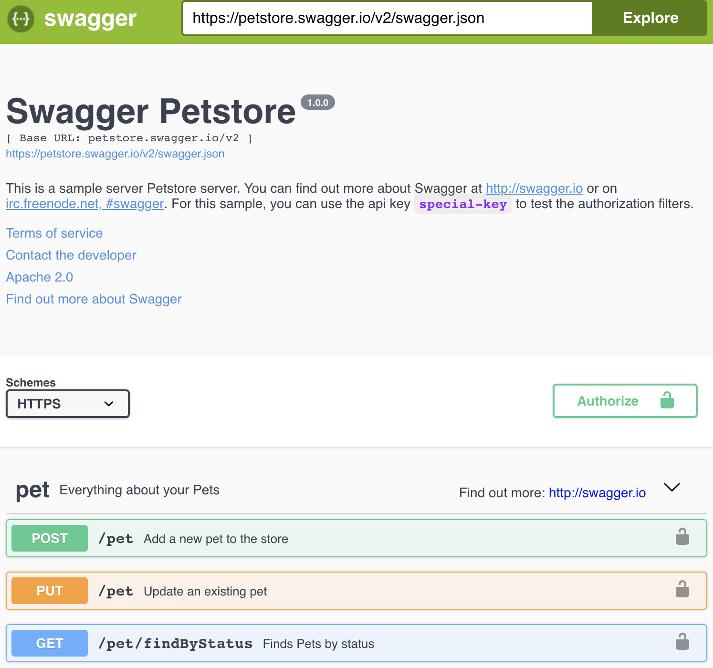

Human Centric Architecture
Jacky Chan
in/jackyarch
About Jacky...

Jacky Chan |
Executive Director - Architecture
J.P. Morgan Asset & Wealth Management Design Thinking Trainer ExperiencePoint Interested in
|
What is Architecture?
Architecture is
Shared understanding of the important stuff about a system
~Martin Fowler
Who needs an Architect?
What is |
HUMANCENTRICDESIGN? |
Human Centric Design is
a holistic understanding of the interests or needs of humans who will receive or use the product, service or system.
Challenges
- Translations
- Complex
- Waterfall and Reactive
Opportunities
- Consistent
- Simple and Intuitive
- Agile and Responsive
Consistent
Bounded Context

- A entity is well defined in a bounded context
- Person in "Sales" context is referring to a Sales Person
Ubiquitous Language

- A language used by all team members to connect all the activities of the team
Ubiquitous Language
 The same terminology is also used in
The same terminology is also used in
- Jira Stories
- Application Code
- Table and Column
- Testing Cases
- RESTful API Definition
Tradtional vs Clean Architecture


Intuitive REST API
- Industry Convention
- Documentation with Examples
- /customers/2345
- /accounts/A304935
Use proper HTTP verb
| Read | GET /customers/2345 GET /customers?size=20&page=3 |
| Create | POST /customers |
| Replace Whole | PUT /customers |
| Modify partial | PATCH /customers |
| Delete | Delete /customers |
Documentation with Example
- Try it out and learn
- Pre-filled examples
Functional Testing
Gherkin allows us to articulate test cases in plain english using- Given
- When
- Then
Typical Functional Testing
Scenario: Login with bad password- Given launch URL https://app/login
- When http get parameter user id equals to 'Jacky'
- And http get parameter password equals to *****
- Then error page is returned
- And return to login page https://app/login
A better approach
Scenario: Login with bad password- Given launch app using browser Chrome
- When I type user name 'Jacky'
- And I type an incorrect password
- Then I see error message "Invalid username/password"
- And I stay on the login page
Self-Descriptive Code
/**
* Find customers who have more than a given amount in saving account
* @param amount Amount in Saving Account
*/
public Customer findCustomer(BigDecimal amount);
public Customer findCustomersWithSavingAccountMoreThan(BigDecimal usdAmount);